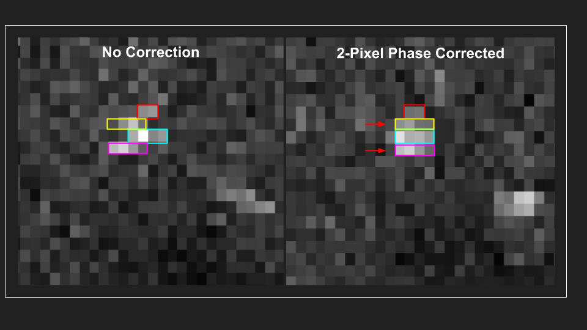
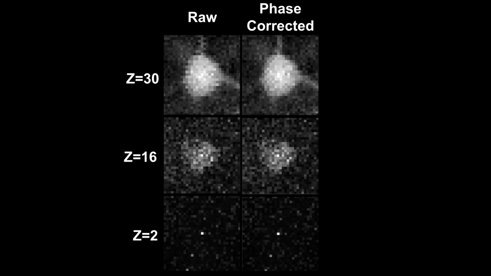

1. Assembly#
Function for this step: convertScanImageTiffToVolume()
Note
Before beginning assembling your images, be sure to review Core Parameters as they are the same for each step in the pipeline and will not be covered in detail here.
..See Troubleshooting for common issues you may encounter along the way.
1.1. Overview#
Assembling reconstructed images from raw LBM datasets consists of 3 main processing steps:
De-interleave z-planes and timesteps.
Correct Scan-Phase alignment for each ROI.
Re-tile vertically concatenated ROI’s horizontally.
{kind=link}
For a more in-depth look at the LBM datasets and accompanying metadata, see the LBM metadata section of the MBO user documentation.
Warning
All output .tiff files for a single imaging session should be placed in the same directory. No other .tiff files should be in this directory. If this happens, an error will throw.
1.2. Inputs#
This example follows a directory structure shown in the first steps guide.
Inputs and outputs can be anywhere you wish so long as you have read/write permissions.
parent_path = 'C:\Users\<username>\Documents\data\high_res\';
raw_path = [ parent_path 'raw\']; % where our raw .tiffs go
extract_path = [ parent_path 'extracted\']; % where results are saved
Note
Files are saved with the string ‘plane’ appended automatically, don’t put the characters _plane_ together in your raw/extracted filenames!
1.2.1. Scan Phase#
In addition to the standard parameters, users should be aware of the implications that bidirectional scan offset correction has on your dataset.
The fix_scan_phase parameter attempts to maximize the phase-correlation between each line (row) of each vertically concatenated strip.
This example shows that shifting every other row of pixels +2 (to the right) in our 2D reconstructed image will maximize the correlation between adjacent rows.
{kind=link}
Important
Checking for a scan-phase offset correction is computationally cheap, so it is recommended to keep this to true.
When every other row of our image if shifted by N pixels, adjacent rows that are not shifted now have a N number of 0’s padded in between the rows that were shifted.
When this shift happens, the pipeline automatically trims those pixels because they longer contain valid calcium signal.
{kind=link}
You’ll see the decreased gap between ROI’s for the scan-offset corrected image, showing the 2 pixels removed from each edge accounting for the padded 0’s.
Caution
If a scan-offset correction is applied, the ROI edge may contain these shifted pixels. This can be corrected with the trim_roi parameter discussed in the next section.
1.2.2. Trim ROIs#
There are times when the seam between re-tiled ROI’s is still present.
This seam may not appear when frames are viewed individually, but are present in the mean image.
The trim_roi parameter takes an array of 4 values as input corresponding to the number of pixels to trim on the left, right, top and bottom of each ROI.
trim_roi = [4,4,8,0]
Tip
If a scan-phase correction is applied to this plane, there will be dead pixels on the left/right edges.
More than 3 pixel-shift offsets are rare, so we recommend a starting value of [2 2 x x] which trims 2 pixels from the left and right edge.
1.2.3. Trim Image#
In the same manner as trimming ROIs, the trim_image parameter will trim the edges of the retiled-image.
1.3. Outputs#
Output data are saved in .h5 format, with the following characteristics:
one file per plane
named “step_plane_N.h5” where step = extraction, registration or segmentation
data saved to a
h5 groupmetadata saved as
h5 attributes
1.3.1. H5 Groups#
HDF5 is the primary file format for this pipeline. HDF5 relied on groups and attributes to save data to disk.
Groups: h5 files can be thought of like directories where a 3D time-series is self contained within its own folder (or group).
Attributes: Attributes are special “tags” attached to a group. This is where we store metadata associated with each group and dataset. The result of calling
get_metadata(raw_path)(see scanimage metadata for more information about the magic behind the scenes here).
Following image assembly, two “groups” are saved: registered timeseries and mean image:
/Y
: A fully reconstructred 2D timeseries.
/Ym
: The 2D mean image of your 2D timeseries.
How to: Preview file contents
Use MATLAB functions h5info and h5disp to preview file contents.
h5disp takes the filename as the only input parameter, and displays the contents of the file:
>> h5disp(fullfile(data_path, "extracted/extracted_plane_1.h5"));
HDF5 extracted_plane_1.h5
Group '/'
Attributes:
'num_planes': 28.000000
'num_rois': 3.000000
'num_frames': 2320.000000
'frame_rate': 7.720873
'fov': 672.000000 668.000000
'pixel_resolution': 1.000000
%% Metadata values removed to save space ...
Dataset 'Y'
Size: 668x222x2320
MaxSize: 668x222xInf
Datatype: H5T_STD_I16LE (int16)
ChunkSize: 668x222x16
Filters: none
FillValue: 0
Dataset 'Ym'
Size: 668x222
MaxSize: 668x222
Datatype: H5T_IEEE_F64LE (double)
ChunkSize: []
Filters: none
FillValue: 0.000000
h5info takes the filename and the group, and displays the contents of the file:
>> h5info(fullfile(data_path, "extracted/extracted_plane_1.h5"))
ans =
struct with fields:
Filename: 'C:\Users\RBO\caiman_data\mk717\1um_72hz\extracted\extracted_plane_1.h5'
Name: '/'
Groups: []
Datasets: [2×1 struct]
Datatypes: []
Links: []
Attributes: [27×1 struct]
Notice our metadata is saved to the root group. This is to allow you to easily retrieve metadata for a step by calling read_h5_metadata().
1.4. Validate Outputs#
In your save_path, you will see a newly created figures folder:
This contains an image for each z-plane and each ROI
A close-up of the brightest image in every plane for a random frame.
Each ROI image shoes the neuron before and after scan-correction.
We can both evaluate scan-correction and see that our plane quality changes with depth:
{kind=link}
Additionally, you can use this images to get an idea of values you want to use for registration.
{kind=link}
Taking the pixel resolution of \(3μm\) from our metadata, we see this neuron is \(~10μm\) wide.
We may then want to limit our NoRMCorre Parameters to only allow shifts of this size with max_shift=10/metadata.pixel_resolution.
To get a sense of how much motion is present in your timeseries, see tips and tricks: exploring datasets in MATLAB.